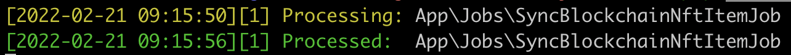
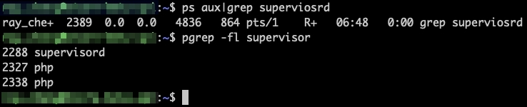

Laravel Queue Usage
Using queues to defer processing of tasks that don't need immediate attention.

The purpose of queues is to defer processing of a time-consuming task that doesn’t require immediate completion.
Like sending emails, users don’t need to wait for the email to be sent successfully before the next step.
Allowing the application to respond more quickly to web requests and smooth user experience.
Preparation
Laravel supports multiple queue drivers
- Database
- Redis
- Amazon SQS
If testing locally, you can configure it in the .env file as follows:
QUEUE_CONNECTION=sync
This will execute immediately after sending the task, making it more convenient for testing Queue-related code.
In the following example, we will demonstrate using database as the driver.
QUEUE_CONNECTION=database
Create Queue table
Because Queue is a feature provided by Laravel.
You can directly create a database table named Jobs to record pending Queue information using a command.
php artisan queue:table
php artisan migrate
Create Job files
You can create it manually or by using a command.
php artisan make:job SyncBlockchainNftItemJob
At this point, a file will be generated in the specified path: app/Jobs/SyncBlockchainNftItemJob.php
Write the Job program logic.
Just modify the SyncBlockchainNftItemJob.php we created earlier.
And the main functionality should be written inside the handle() method, like this
public function handle()
{
if ($this->userId) {
Artisan::call("nft-items:sync $this->userId");
}
}
Call an Artisan command to execute something.
The required parameters can be initialized in the __construct at the beginning of the Job program file and can be used as input parameters when creating Queue tasks in the future.
protected $userId;
public function __construct($userId)
{
$this->userId = $userId;
}
Call the Job to create a task.
Now that the Job is ready, how do you call it from the Controller?
After including SyncBlockchainNftItemJob, you can use dispatch wherever you want to create a task and assign it to the specified Job.
$this->dispatch(new SyncBlockchainNftItemJob($user->id));
// Alternatively, you can keep it even simpler.
SyncBlockchainNftItemJob::dispatch($user->id);
Starting Queue Worker
If sync was not used as the driver earlier, the Queue won’t execute!
You need to use a command to instruct the Queue to start working!
php artisan queue:work
It’s important to note that once Queue Workers are started, they won’t automatically update when there are code changes.
During the deployment phase, remember to use a command to restart the Queue worker.
Otherwise, it will continue running the old version of the code!
php artisan queue:restart
Check status
ps -ef|grep queue:work
Check execution status
Executing the Controller’s code, you’ll notice that when the Queue is triggered, a new record is added to the jobs table.
And during execution, the terminal will display corresponding information.

If you see Processed, it means the task has been completed, and at this point, the record in jobs will be removed.
Supervisor
When the Queue is running, various situations can lead to critical errors, preventing the execution of tasks.
In such cases, it’s recommended by the official documentation to use Supervisor
for management.
In the event that the Queue unexpectedly stops operating, Supervisor will restart the Queue service based on the configuration file, ensuring that Jobs can run continuously!
Install from docker image
FROM php:7.4-fpm
RUN apt-get install supervisor
CMD /var/www/html/_scripts/cron.sh
In the last line of our CMD, we executed a cron.sh as the entry point, which will be used later.
Supervisor Config
Place the file wherever you like.
# supervisord.conf
[program:laravel-worker]
process_name=%(program_name)s_%(process_num)02d
command=php /var/www/html/artisan queue:work --sleep=90 --tries=3
autostart=true
autorestart=true
startsecs=5
user=root
numprocs=3
redirect_stderr=true
stdout_logfile=/var/www/html/storage/logs/supervisord.log
stopwaitsecs=3600
[supervisord]
logfile=/var/log/supervisor/supervisord_main.log
pidfile=/var/www/html/storage/logs/supervisord.pid
[supervisorctl]
Start Supervisor
Create the _scripts/cron.sh file in the project and mount it to the container’s /var/www/html path.
#!/usr/bin/env bash
cd /var/www/html
supervisord -c ./docker/cron/supervisord.conf # Start supervisord using the configuration file located at the specified path
php /var/www/html/artisan schedule:work # Simultaneously initiate the cron job.
When the Dockerfile executes a shell script via CMD, it can be considered as
sh _scripts/cron.sh
In cron.sh, we’ve done three things:
- Navigate to the container’s
/var/www/htmlpath. - Start the supervisord service using the specified config.
- Execute
php artisan schedule:work.
This way, both supervisord and the cron job service are initiated.
Check Supervisor status
You can use a command to confirm whether supervisord is running.
pgrep -fl supervisord
# or
ps aux|grep supervisord
If an error message appears indicating that the ps or pgrep commands do not exist, you will need to install the package using a command.
apt-get update && apt-get install procps
If you see supervisord listed, it means it’s already running.
